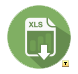

Configuración de Cuestionarios |
 |
Nueva / Editar
Pantallas de instrucciones |

|
| # | Nombre | Acciones |
|---|---|---|
| {{inc.secuencia}} | {{inc.nombre}} |
Secciones definidas
| Secuencia | Nombre | Preguntas | Acciones | |||||||
|---|---|---|---|---|---|---|---|---|---|---|
| {{sec.secuencia}} |
|
{{sec.nombre}} | {{sec.num_preguntas}} |
|